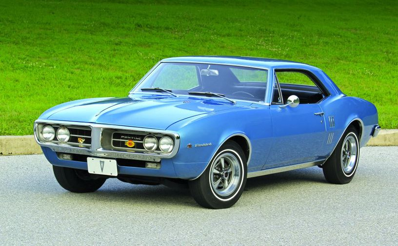
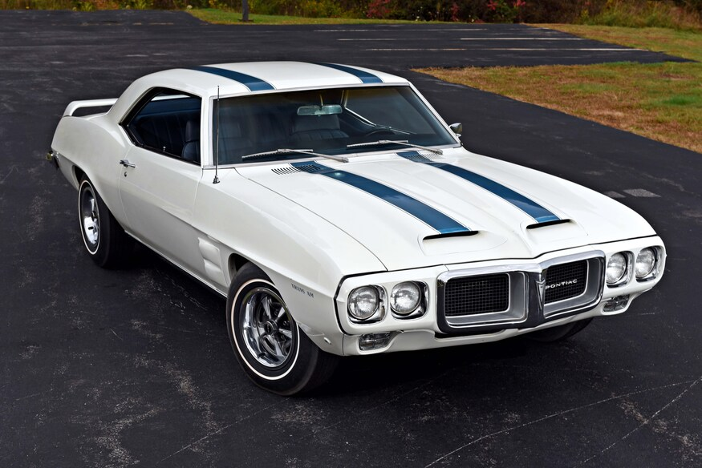

1967-1969
leírás
1967 február 23.-án adták ki a Firebirdet a Camaro után 5 hónappal. Míg a Camaronak a Mustang volt a nagy ellenfele
a Firebirdnek a Cougar volt ami a Mustang kisebb testvére volt amit Ford alcége a Mercury gyártott. Az első generáció
mind a 3 évben külöbözött föleg 1969-ben amikor egy arcfelvarráson ment át.
motor opciók
- 3.8 L Pontiac SOHC I6 (1967)
- 4.1 L Pontiac SOHC I6 (1968-69)
- 5.3 L Pontiac V8 (1967)
- 5.7 L Pontiac V8 (1968-69)
- 6.6 L Pontiac V8 (1967-69)
modellváltozatok
- Firebird Sprint
- Firebird 400
- Firebird Trans Am (csak 1969)
Kialakítások
- 2 ajtós Coupé
- 2 ajtós Kabrió
1969-es Trans Am és a 8 kabrió Trans Am
amikor bejött a Trans Am 1969-ben csak 697-et gyártottak belőle. Ezek közül 8 kabrió volt, mind a 8 gyűjtök
kezében van. ezeket nem nehéz felismerni mert csak egyetlen szín kombinációban jött: fehér kék csíkokkal, a sima és a Sprint
nem jött ebben a szín kombinációban.
Képek
1967-es Firebird

1968-as Firebird 400

1969-es Firebird Trans Am
